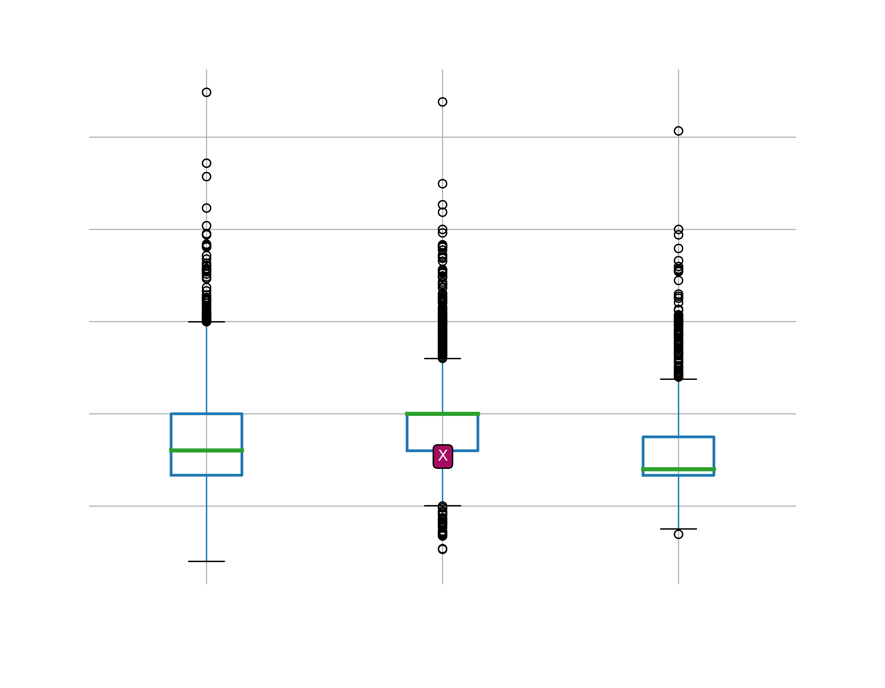
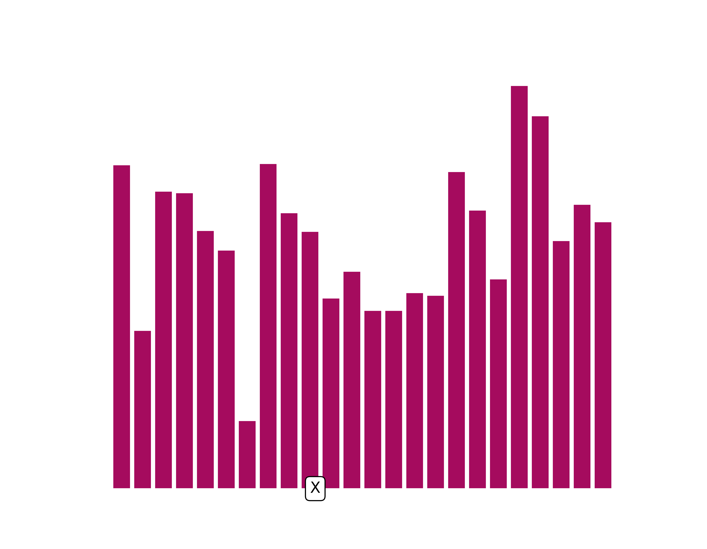
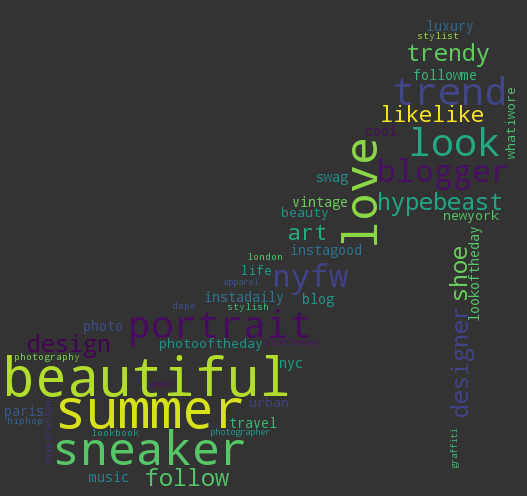

Influence of your post:
{{the_result}}.

Compare your post features (displayed as an 'X') with other posts to improve it!:
Features such as aspect ratios, time of the day, number of words or trending tags can determine the success of the post according to InfluentialThreads. Look for the 'X' mark in the plots and see where it is positioned in relation to this sample of posts.
1) Followed or popular posts most frequently have portrait (smaller apect ratios) photos rather than landscapes (greater aspect ratios):
This plot shows the distribution of the data for each classification of success. For example 50% of the aspect ratios are around 0.7 for 'popular' posts in comparsion with 1.0 for 'followed' posts..
1) Followed or popular posts most frequently post during the evening (PDT):
3) Followed or popular posts most frequently use few words and tags:
4) Compare your tags (below) with the most frequent tags in popular (right stiletto) and not followed (left stiletto) posts:
| Tags |
|---|
| {{ the_tags}} |
Not Followed
Popular
